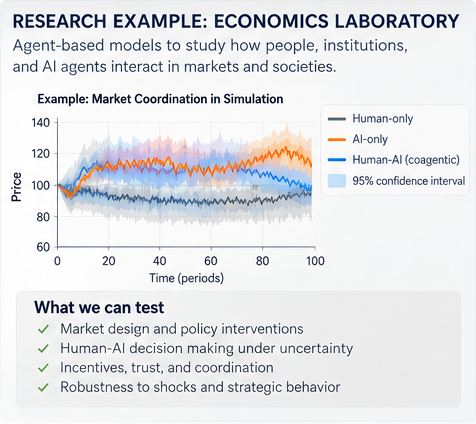
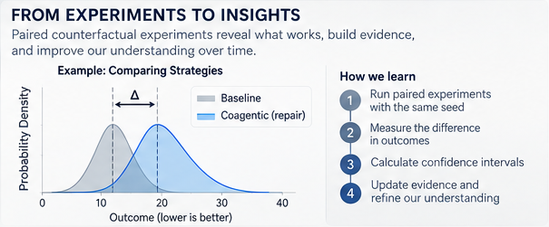
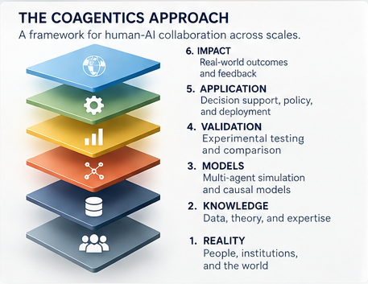
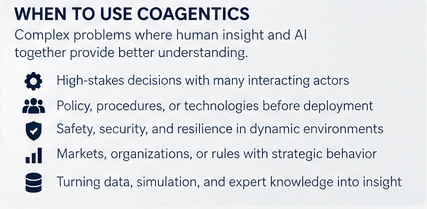

Case study · Economics
Dynamic economic markets
Can controlled market experiments identify how an unfamiliar AI agent will act, and does that account still hold when the market changes?

The market chart contains illustrative rather than verified experimental results.
This is the economics case in a Phase I white paper led by Paul Cummings, with Dale Rothman of George Mason University as research lead. It applies the same inquiry loop as Thinking Together to agents that buy and sell. It is a research design. It is not a report of completed market results.

What the experiment asks
- Identifiability Which behavioral models can actually be separated with feasible market interventions? If they cannot, the result is non-identifiability.
- Experimental efficiency Can an adaptive design reach the same validated conclusion with fewer model queries than fixed or randomized designs?
- Generalization Does a model learned in one set of conditions predict behavior under held-out values, another auction, and markets with other AI agents?

